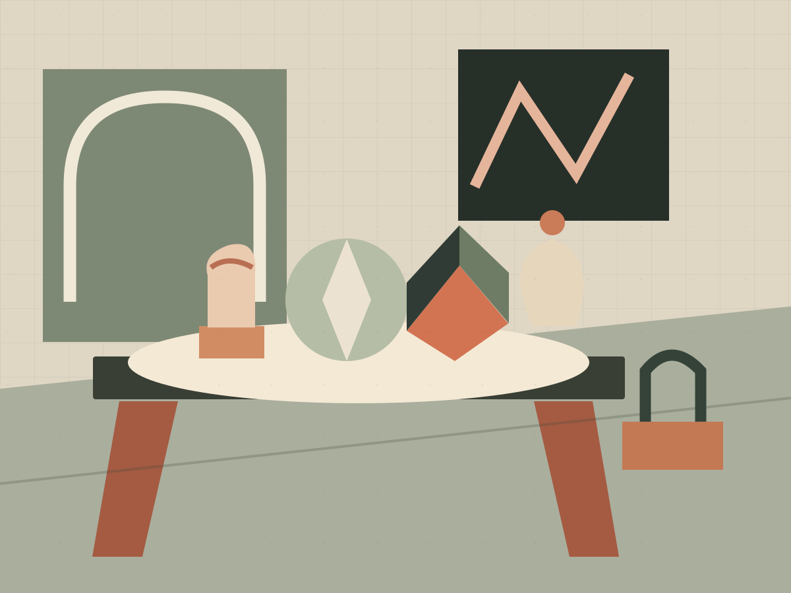
رسم أصلي01 / MATERIALSالفن، النحت
الفن، النحت
والتجريب بالمواد
أعمال تشكيلية، كونكريت، طين، مجسّمات، تصميم منتجات وتجارب إنتاج حيّة.
عرض × إنتاج × ورشاتأسبوع يجمع الفن والتصميم والحرفة والتجريب، ويفتح مساحة للقاء بين الأفكار والأشخاص والأعمال — من الفكرة الأولى إلى العرض أمام الجمهور.
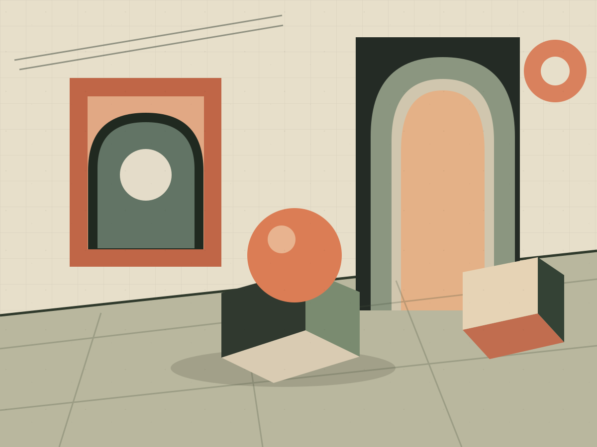
نريد أن تلتقي مجالات التصميم المختلفة في مكان واحد، وأن يتحوّل الأسبوع إلى منصة للتعلّم والتجريب والتعاون، لا إلى مناسبة عرض عابرة فقط.
ينطلق الأسبوع من هَبّ السويداء، ويجمع أعمالاً جاهزة ومشاريع قيد التطوير وورشات وتجارب حيّة وحوارات وسوقاً لمنتجات المصممين والصنّاع. الفكرة الأساسية أن تكون عملية التحضير والإنتاج جزءاً من التجربة نفسها.
أفكار وممارسات لها صوتها الخاص.
مساحة للمحاولة والتطوير والنماذج الأولية.
لقاءات تربط الفنانين والمصممين والجمهور.
حقوق واضحة، واحترام وتنوّع واستخدام واعٍ للموارد.
محاور قابلة للتطوير بحسب الأعمال والورشات التي يتم تأكيدها.

رسم أصليأعمال تشكيلية، كونكريت، طين، مجسّمات، تصميم منتجات وتجارب إنتاج حيّة.
عرض × إنتاج × ورشات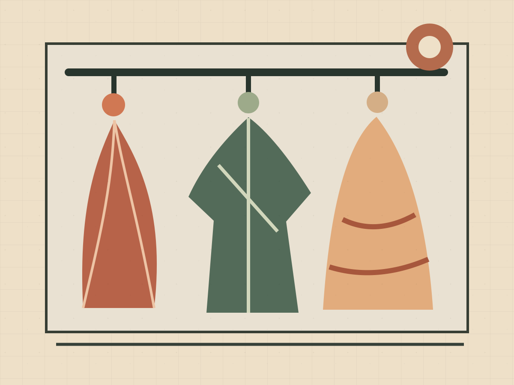
رسم أصليتصاميم قابلة للارتداء، حُلي، خامات، وتجارب تقديم الأزياء.
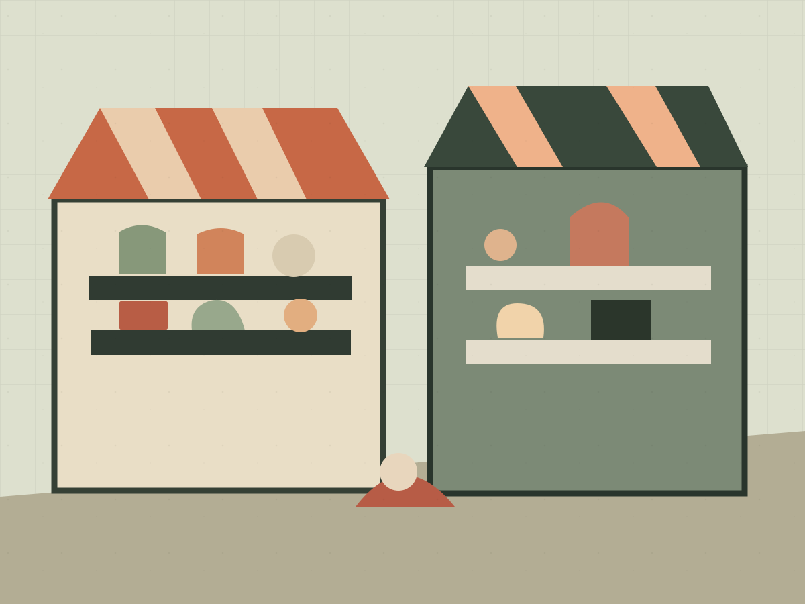
رسم أصليمنتجات مستقلة، قطع محدودة، أعمال يدوية وأفكار قابلة للاقتناء.
تصميم المساحات، الهوية، الملصقات، الإلستريشن، والأشكال التي تعيد تخيّل المكان.
جلسات استماع، صوت تجريبي، آلات، صور متحركة وعروض تربط الصوت بالتصميم.
جلسات قصيرة للتعلّم والتبادل، ومناقشات حول عملية التصميم وفرص العمل المشترك.
هَبّ السويداء هو نقطة الانطلاق والمساحة الرئيسية المقترحة للمعارض والأنشطة. ويمكن لاحقاً التعاون مع مساحات فنية وثقافية أخرى في السويداء عندما يتوفر برنامج وتجهيز واتفاق واضح لكل مساحة.
التوسع إلى مواقع أخرى فكرة قيد الدراسة، وليس إعلاناً عن مواقع مشاركة.
شاهد موقع هَبّ على الخريطة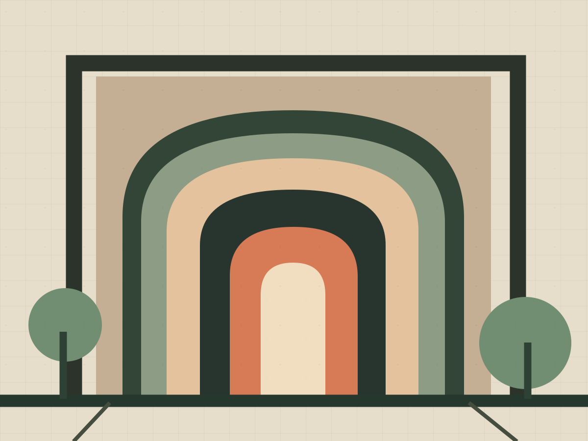
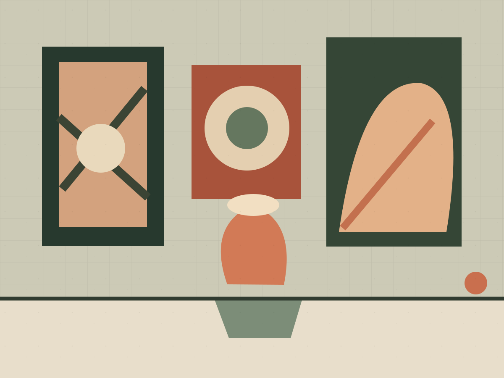
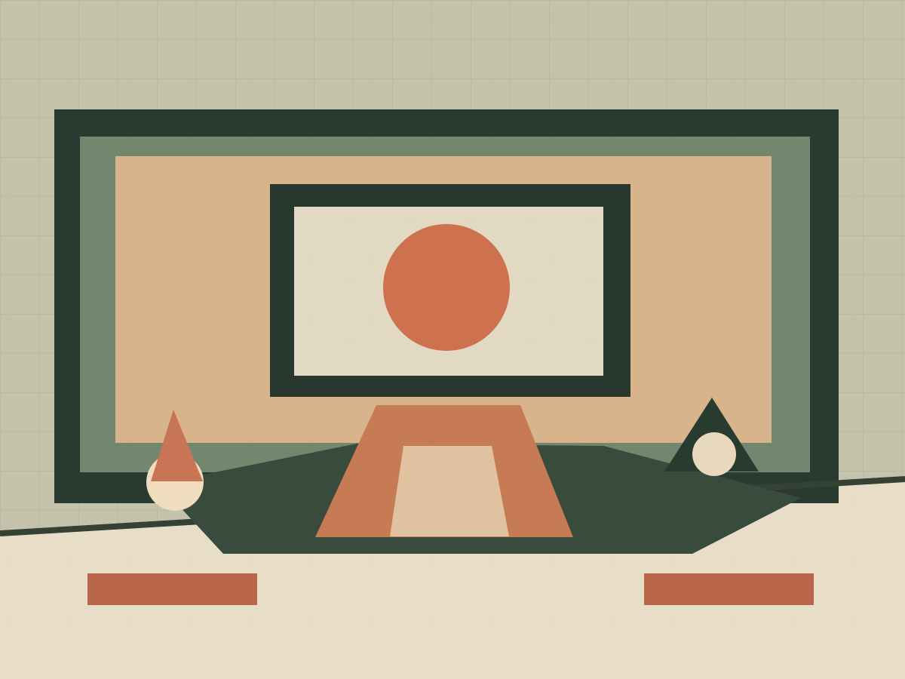
أسبوع التصميم مساحة مشتركة تجمع التنظيم والإبداع والتغطية، ولكل جهة دور واضح.
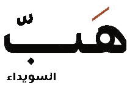
المكان المضيف لأسبوع التصميم ومساحته الأساسية للأنشطة والمعارض واللقاءات.
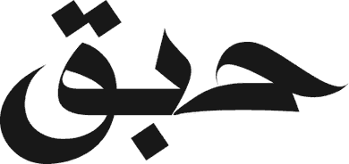
من تنظيم تجمّع حبق، عبر مشروع حبق ناس المعني بالعمل المجتمعي والمشاركة.
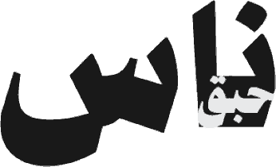
مشروع تجمّع حبق المعني بالعمل المجتمعي وإشراك الناس في تصميم الأنشطة وتنفيذها.
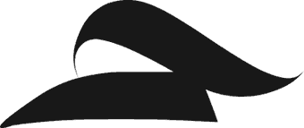
تتولى التغطية الإعلامية والتوثيق، مع الحفاظ على استقلالها التحريري.
هيكل مقترح يساعد المشاركين على تخيّل الأسبوع. تفاصيل الفعاليات وساعاتها قيد التثبيت.
افتتاح المعرض الجماعي، والتعرّف على الفنانين والمصممين والأعمال والمساحات.
* التواريخ 29 تشرين الثاني – 3 كانون الأول 2026 هي الفترة التخطيطية المستهدفة. قد يُختصر البرنامج أو يتغيّر وفق الجاهزية، ولن تُعتبر المواعيد النهائية مؤكدة إلا بعد إعلانها هنا.
نبحث عن أفكار قابلة للتطوير وشراكات حقيقية. اختر شكل المشاركة الأقرب لك.
حتى ذلك الحين، يمكنك معرفة ما يتطلبه كل نوع من المشاركات وتحضير وصف مشروعك وأعمالك. لا تُجمع أي بيانات شخصية عبر هذه الصفحة حالياً.
سنوضح لك المعلومات الأساسية المطلوبة للبدء، ثم نضيف رابط التقديم الإلكتروني عند تفعيله.
مشروع يضيف شيئاً للتجربة، حتى إن كان نموذجاً أولياً.
أصالة الفكرة وتماسكها أهم من الشهرة أو الشهادة.
تناسب العمل مع الوقت والمساحة والموارد والسلامة.
أن يخلق العمل فرصة للحوار والتعلّم والتعاون.
وضوح في العرض والنشر والبيع والأتعاب وشروط المشاركة.
نطمح أن يتطوّر أسبوع التصميم إلى شبكة تعاون دائمة بين الفنانين والمصممين والمساحات الثقافية في السويداء، وأن يخلق برامج إنتاج وتعلّم تستمر خارج أيام الحدث.
قد يشمل ذلك لقاءات دورية، ومجتمعاً من المشاركين، وآليات مشتركة لتطوير الدورات القادمة. الشكل التنظيمي المستقبلي ما زال فكرة للنقاش، وليس كياناً مستقلاً مُنشأً.
هذه هي الفترة المستهدفة حالياً. البرنامج التفصيلي والأنشطة والأوقات قيد التثبيت، وقد يتغيّر نطاق التنفيذ وفق الجاهزية. ستظهر أي تحديثات مؤكدة على هذه الصفحة.
نعم، يمكن اقتراح نموذج أولي أو تجربة أو ورشة إلى جانب الأعمال الجاهزة، مع توضيح ما الذي يمكن تنفيذه وعرضه ضمن الوقت والموارد المتاحة.
لا. تهتم المبادرة بالأفكار المميزة والجودة والتجريب، وتشجع الطلاب والمبتدئين والمستقلين والمجموعات، مع مراعاة ملاءمة كل مقترح للبرنامج.
لا يوجد سعر موحد لجميع أشكال المشاركة. شروط السوق أو الورشات أو الخدمات المدفوعة، إن وُجدت، تُوضّح بشكل منفصل قبل الاتفاق. عرض الأعمال الفنية لا يُعامل تلقائياً كنشاط بيع تجاري.
يمكن اقتراح تعاون أو محتوى عن بُعد إذا كان مناسباً للنشاط والقدرات التقنية. لا توجد حالياً تعهدات بتغطية السفر أو الإقامة أو الشحن.
يمكن اقتراح نشاط مميز في مساحة أخرى، على أن تكون هناك جاهزية تشغيلية واتفاق واضح بشأن المسؤوليات والسلامة والميزانية والبرنامج. إضافة المساحات ليست مؤكدة مسبقاً.
تظهر حالة التقديم وروابط الاستمارات الرسمية في قسم المشاركة من هذه الصفحة. راجع متطلبات كل فئة قبل التقديم؛ ولا يُعد إرسال الطلب موافقة تلقائية على المشاركة.
سواء كنت فناناً أو مصمماً أو صاحب مساحة أو ورشة أو مشروع، هذه دعوة للتعرّف على فكرة الأسبوع والتفكير بما يمكن أن نصنعه معاً.